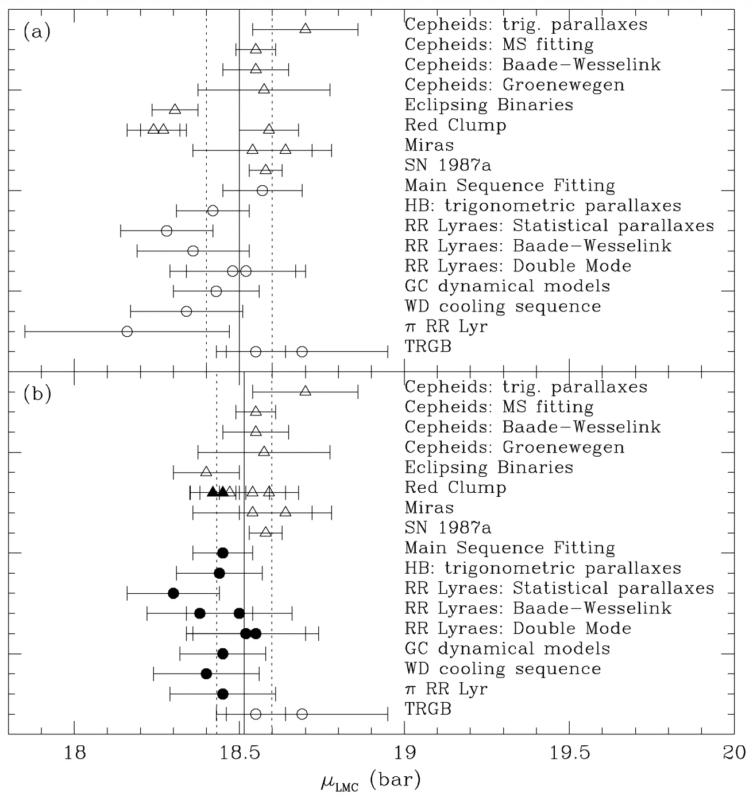

Distance to the LMC datasetsThe CASt datasetLMC_distance.datAstronomical background While it is easy to find the position of astronomical objects in the sky (giving two dimensions of their spatial location), it is usually very difficult to find their distance (the third dimension). Throughout the 20th century, a complicated "cosmic distance ladder" was developed. Starting from the nearest objects for which distances could be reliably determined, calibrations for various classes of luminous objects which serve as "standard candles" were established. A complicated combination of these distance indicators are applied, each with its own statistical and systematic uncertainties. Many fundamental results depend on the cosmic distance ladder: the luminosity of stars, the size of our Milky Way Galaxy, the expansion rate of the Universe and thus the age of the Universe, and much more. By the year 2000, most discrepancies in the cosmic distances had been ironed out, and a consensus distance scale emerged. However, uncertainties around 5-20% are still commonly present and systematic discrepancies remain between some methods. One crucial rung of the cosmic distance ladder is the distance to the Large Magellanic Cloud (LMC), the nearest galaxy with a significant stellar population. It thus serves as a bridge between the scale within our Galaxy to the extragalactic distances. Errors or uncertainties in the LMC distance propagates throughout all of extragalactic astronomy. Thus, a huge effort has been made to establish the distance to the LMC. Methods used include: Cepheid, RR Lyrae and Mira variable stars (three types of pulsating red giant stars), eclipsing binary stars, horizontal branch and red clumpgiant stars, white dwarf stars, and the unique supernova of 1987. The agreement between these methods are reasonably satisfactory today. The figure below, and the accompanying dataset give an mean distance modulus of DM = 18.515 ± 0.085 mag (Clementini et al. 2003). Similar contemporaneous meta-analyses give DM = 18.52 +/- 0.10 (Walker 2003), 18.55 +/- 0.06 (Fouque et al., 2003) and 18.48 +/- 0.04 (Feast 2003, all in "Stellar Candles for the Extragalactic Distance Scale", Lect Notes in Physics vol 635).  Dataset Statistically, this is a univariate dataset consistent of repeated measurements of a single, unchanging physical quantity. The quantity is known as the Distance Modulum (DM) with units of magnitudes. It can be converted to linear distance in parsecs (1 parsec ~ 3x1013 kilometers) with the formula DM =
5*log(Distance) - 5.
The distance to the LMC is thus about 50 kiloparsecs, with an uncertainty of 5-10%. Each DM measurement is accompanied by an individual measurement error; these are heteroscedastic measurement errors of diverse origins. The dataset has 25 rows and the following 4 columns:
The dataset was obtained from the paper "Distance to the Large Magellanic Cloud: The RR Lyrae Stars" by Gisella Clementini, Raffaele Gratton, Angela Bragaglia, Eugenio Carretta, Luca Di Fabrizio, and Marcella Maio, Astronomical Journal 125, 1309-1329 (2003). Statistical exercises
|
    |